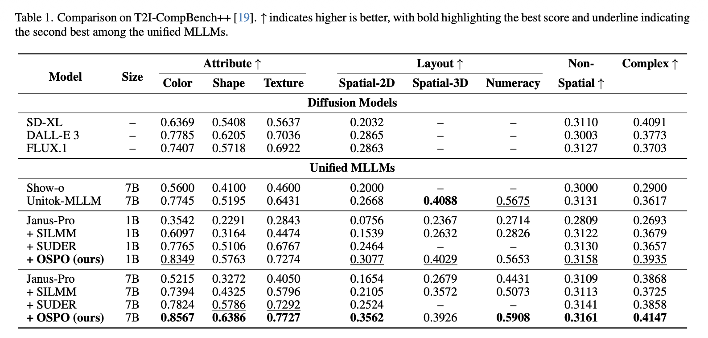
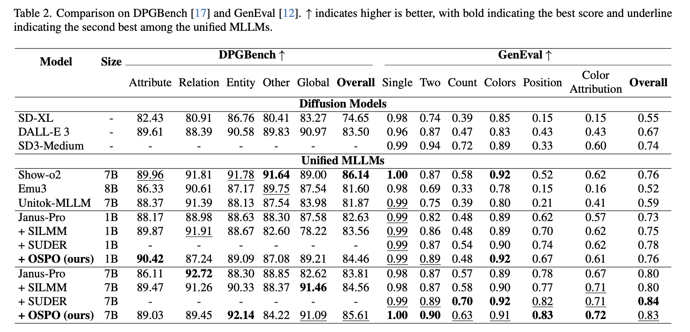
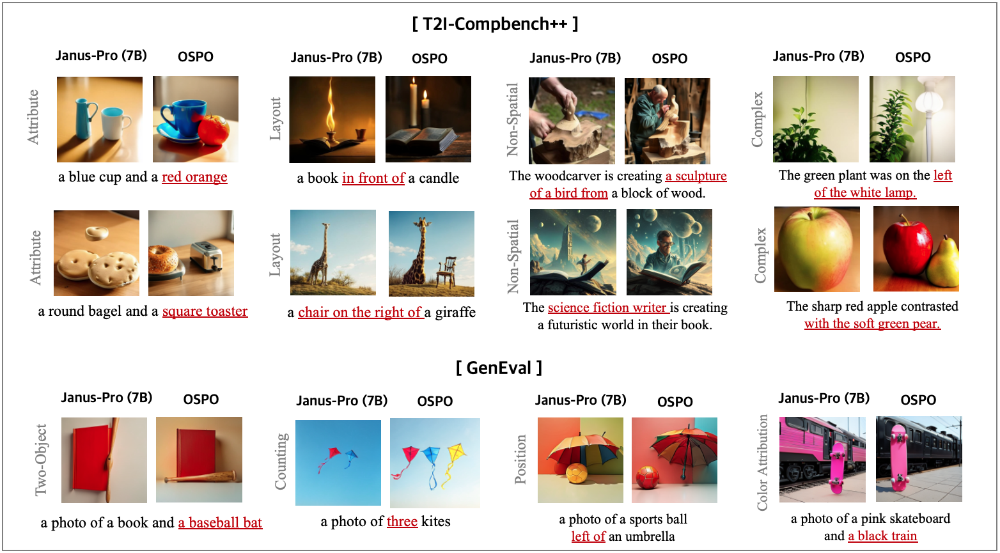
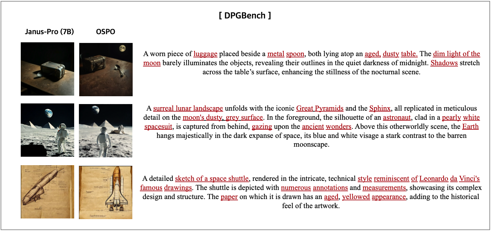

CVPR 2026
Recent advances in Multimodal Large Language Models (MLLMs) have enabled unified multimodal understanding and generation. However, they still struggle with fine-grained text-image alignment, often failing to faithfully depict objects with correct attributes such as color, shape, and spatial relationships. To mitigate this issue, previous studies have explored preference optimization methods such as DPO and GRPO, but these approaches incur substantial computational cost, both in constructing preference data and in performing optimization. This has motivated self-improving preference optimization approaches, in which the MLLM autonomously generates its own training data, self-estimates preference feedback, and self-optimizes using the resulting self-constructed preference pairs. However, existing self-improving methods still overlook fine-grained, object-level semantics, allowing object hallucination to persist. To tackle this problem, we propose Object-centric Self-improving Preference Optimization (OSPO), a self-improving framework designed to enhance object-level text-image alignment. OSPO explicitly constructs object-centric preference data without relying on any external data or models. We also introduce a new approach that leverages attention-based object masks together with an object-weighted SimPO loss to enhance object-specific fidelity. Extensive experiments on three compositional image generation benchmarks demonstrate that OSPO significantly improves fine-grained alignment and reduces object hallucination, outperforming prior self-improving methods and even specialized diffusion-based text-to-image models.




@article{oh2025ospo,
title = {OSPO: Object-centric Self-improving Preference Optimization for Text-to-Image Generation},
author = {Oh, Yoonjin and Kim, Yongjin and Kim, Hyomin and Chi, Donghwan and Kim, Sungwoong},
journal = {arXiv preprint arXiv:2506.02015},
year = {2025}
}